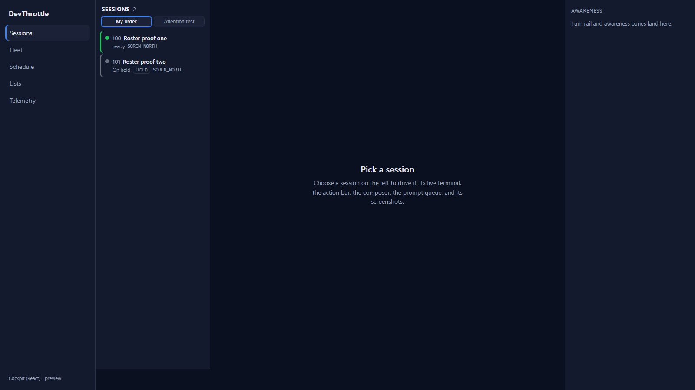
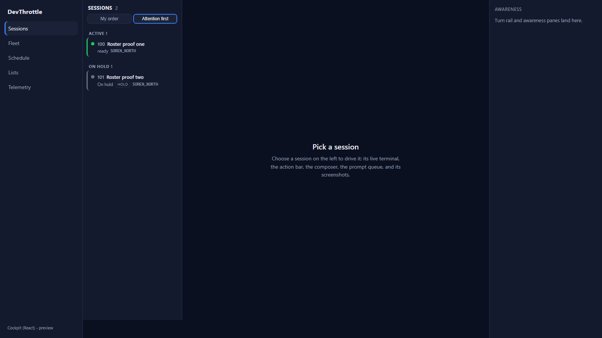
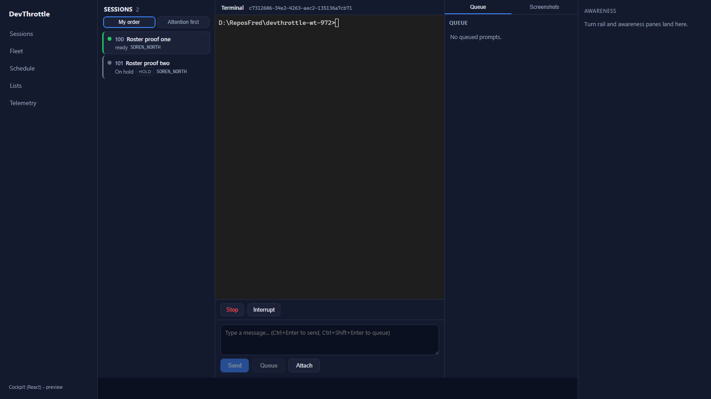
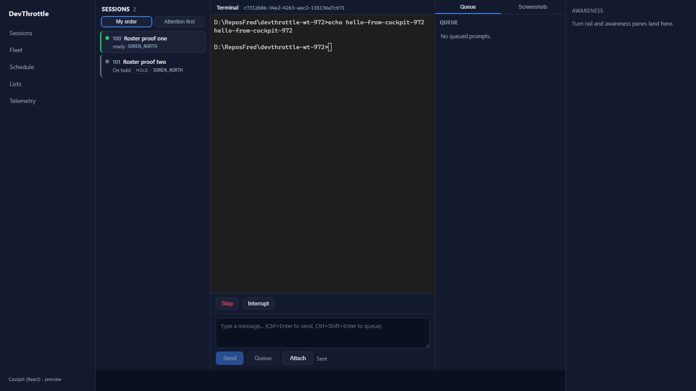
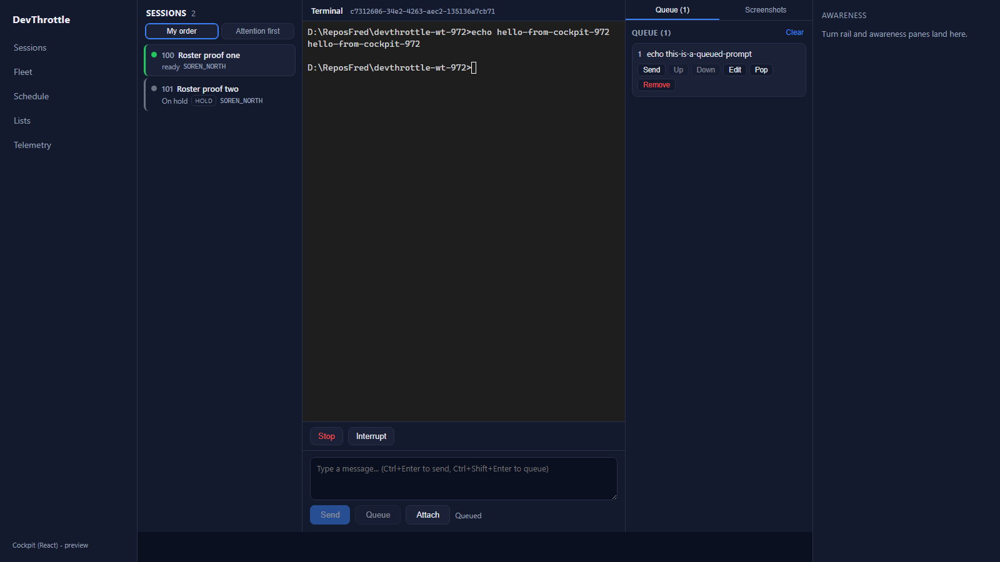
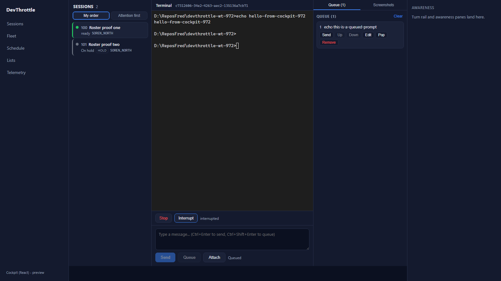

Issue #972 - Cockpit React: session roster / rail + reply and action bar
Developer Agent proof - epic #967 (Rebuild the Cockpit in React). Branch
issue-972-roster-reply-bar. Builds on #968 (client-core), #969 (React shell at /c),
#970 (secret-free Gateway endpoints), #971 (interactive TerminalPane).
What was implemented
The core driving loop for the React desktop Cockpit: see every session, select one, answer it.
A one-to-one port of the Blazor SessionRail.razor (the fleet-wide rail) and the
composer / reply and action controls in Cockpit.razor, driven entirely client-side
against the shared Gateway client through root-relative URLs.
- Fleet roster / rail. Lists every session the Gateway roster aggregation
(
GET /sessions) returns, across every Director, with the one effective status color and short context line, reusingclient-core/sessionsfor ordering and the waiting-state ladder. Ordering rule honored: manual "My order" (the stable desktopSortOrder) is the DEFAULT; "Attention first" (needs-you / active / on-hold buckets) is an OPT-IN toggle, never applied automatically. - Selection drives the terminal and the reply bar. A roster row is a link to
/session/{sid}; the detail region mounts #971'sTerminalPaneverbatim plus the action bar and the composer, all bound to the selected session. - Reply + action bar. Send (
POST /prompt, appendEnter true; Ctrl+Enter), Queue (POST /queue; Ctrl+Shift+Enter), and the driver action bar rendered verbatim from the session'sdriverCapabilities: Stop (POST /escape), Interrupt (POST /interrupt), Clear context, History. A verb the driver lacks is simply absent. - Prompt queue panel (the queue verbs: enqueue / send-now / move / edit / pop / remove / clear) and the screenshots gallery + upload (list / thumbnail via the same-origin per-session proxy / insert path / delete, and composer image upload), matching the current Cockpit behavior and routed by session id through the Gateway.
- No absolute URLs in the client - every request is a root-relative path; the #968 Gateway-only-ingress ESLint rule passes.
Files
packages/client-core/src/api/client.ts- new shared Gateway verbs: the prompt queue (getQueue / enqueuePrompt / send / delete / edit / move-up / move-down / clear), sendClearContext, sendHistoryPicker, and the screenshots surface (getScreenshots / deleteScreenshot / uploadImage / screenshotFileUrl). All root-relative.apps/cockpit/src/sessions/SessionRoster.tsx- the roster rail with the My-order / Attention-first toggle (My order default).apps/cockpit/src/sessions/SessionsView.tsx- the layout route: polls the roster, keeps it mounted, routes the selected session's detail via <Outlet>.apps/cockpit/src/sessions/SessionDetail.tsx- terminal + action bar + composer + the queue/screenshots dock for one session.apps/cockpit/src/sessions/SessionActionBar.tsx,SessionComposer.tsx,QueuePanel.tsx,ScreenshotsPanel.tsx- the reply/action surface.apps/cockpit/src/main.tsx- router wired to the SessionsView layout.apps/cockpit/src/styles.css- roster / detail / dock styles (all tokenized).apps/cockpit/vite.config.ts- dev-only, env-guarded proxy sonpm run devcan front a live Gateway/Director (used for this proof).
Acceptance criteria - verified
| Criterion | Result | Evidence |
|---|---|---|
| The rail lists every session across the fleet with correct state and the current default ordering. | PASS | Two real sessions listed under "My order" (default): #100 green/ready and #101 green with the HOLD tag. Screenshots 01 / 03. |
| Manual "My order" is the default; attention-first is opt-in, never automatic. | PASS | Default view is the flat desktop order; the "Attention first" toggle groups ACTIVE (1) and ON HOLD (1). Screenshot 02. |
| Selecting a session drives the terminal pane and the reply bar. | PASS | Clicking "Roster proof one" opened its live terminal (cmd.exe prompt) and the composer + action bar (Stop, Interrupt rendered from its Cancel+Interrupt caps). Screenshot 03. |
| Send, Queue, Interrupt, and Escape all work against a real session through the Gateway. | PASS | Every verb returned HTTP 200 (verb-results.json). Send echoed "hello-from-cockpit-972" into the terminal (04); Queue added the item (05); Interrupt -> "interrupted" (06); Stop -> "turn stopped" (07). |
| No absolute URLs in the client (lint rule passes). | PASS | npm run lint (Gateway-only-ingress over packages/** + apps/**) reports 0 errors. |
Build + checks
npm run lint -> 0 errors (Gateway-only-ingress) npm run typecheck --workspace @devthrottle/client-core -> tsc clean npm run build --workspace @devthrottle/cockpit -> tsc + vite build succeeded dotnet build cc-director.sln (Release, slot 15) -> Build succeeded, 0 Error(s)
How QA can reproduce
- Launch an isolated test Director and create a session (a RawCli
cmd.exesession is deterministic):POST /sessions { repoPath, agent:"RawCli", command:"cmd.exe", name, purpose }. - Serve
apps/cockpitwith the dev server fronting that Director as the Gateway:COCKPIT_PROXY_TARGET=http://127.0.0.1:<port> npx vite --port 5231, then openhttp://127.0.0.1:5231/c/. - Confirm the roster lists the sessions in My order (default); toggle Attention first. Select a session; type a line and Send (it echoes); Queue a line (it lands in the Queue tab); click Interrupt then Stop (the action status confirms each). All calls are same-origin, root-relative.
Live evidence






CenCon impact
No architecture or security drift. This reuses existing Gateway endpoints and the shared
client-core contract; it adds no server surface and no secret. The Gateway-only-ingress rule still
passes. The docs/cencon/ manifest set is not present in this repo checkout, so there
is nothing to update.
Conclusion
I believe this is finished. All acceptance criteria are met and proven live against a real Director + session through the Gateway path, and the ordering rule (My order default, attention-first opt-in) is honored.